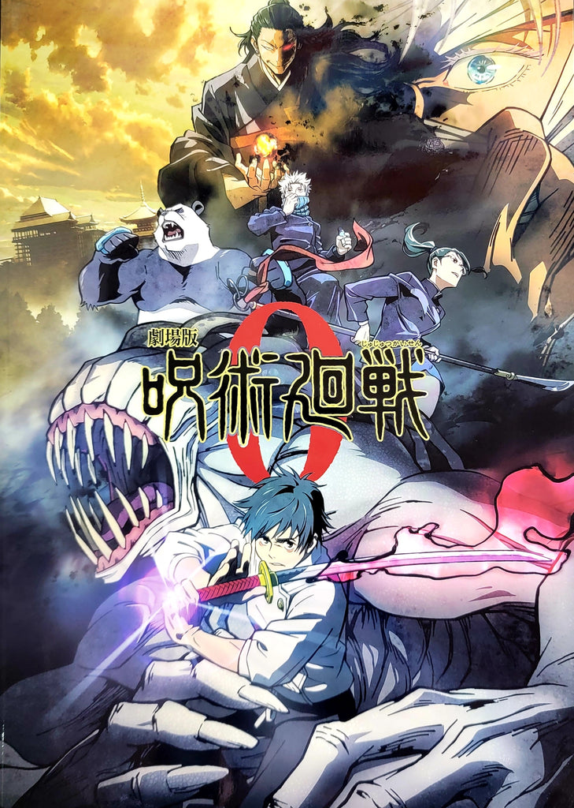

STORY
A young isolated high school student named Yuta Okkotsu suffers from a curse from his late girlfriend who follows him everywhere. Upon meeting a sorcerer named Satoru Gojo, Yuta decides to follow him to his school, in order to control the power of the curse.